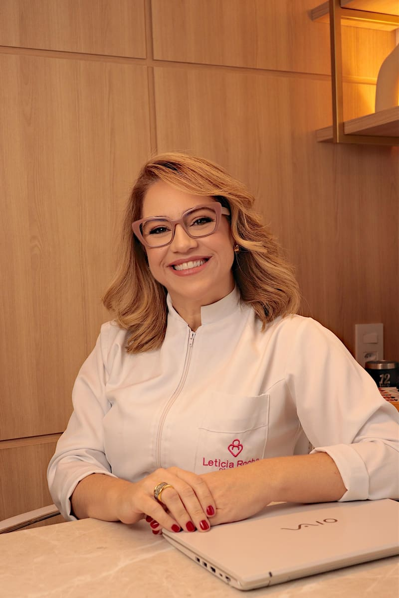
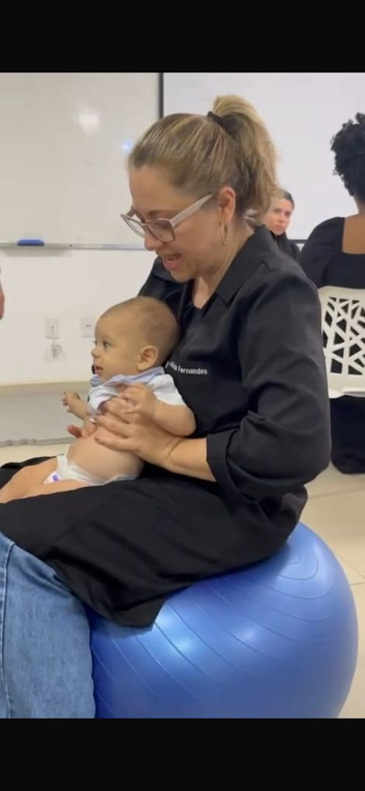

Sobre
Quem cuida de você
Osteopata neonatologista, com 29 anos de prática e mais de 10 mil atendimentos.


Quem cuida de você
Letícia Rocha
Osteopata neonatologista
Sou osteopata há 29 anos, com mais de 10 mil atendimentos. Mãe que criou dois filhos sozinha, conheço a maternidade por dentro, e levo essa vivência para o cuidado com cada família. Minha inquietação é sempre a mesma: chegar o mais perto possível da causa para eliminar as consequências do problema.
"Cada corpo conta uma história. Meu trabalho é ouvir com as mãos."
Osteopatia adulto, pediátrica e neonatal · Crefito2/25112F
Trajetória
Uma vida dedicada ao cuidado
- A base clínicaAnatomia, movimento e reabilitação: a base de tudo.
- Formações nacionais e internacionaisPosturologia, pediatria e cuidados intensivos com bebês de alto risco, entre outras.
- Osteopatia pediátrica e neonatalO cuidado com bebês, desde os primeiros dias de vida, virou a marca do meu trabalho.
- 29 anos · +10 mil atendimentosPrática clínica intensa e atualização constante.
O consultório
Um espaço calmo, porque o corpo só solta onde se sente seguro
Atendimento individual e com hora marcada, em Icaraí, Niterói. Toque nas fotos para ampliar.
Seu corpo merece esse cuidado
Seja para o seu bebê, para a sua gestação ou para aquela dor que já dura tempo demais, comece por uma conversa.